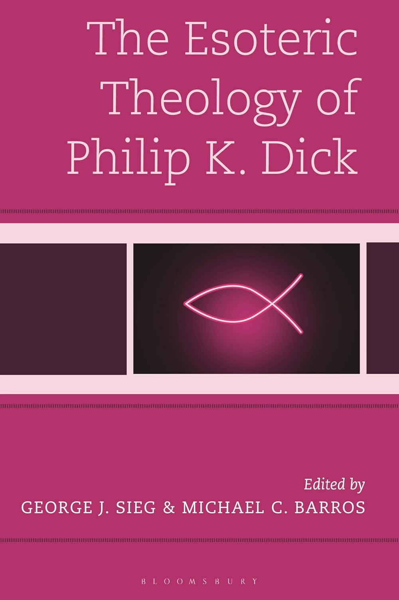

Edited volume · Bloomsbury, 2025
The Esoteric Theology of Philip K. Dick
Co-edited collection examining Philip K. Dick's engagement with theology, esotericism, and speculative imagination across literature and media adaptations.
Essays situate Dick's 1974 visionary experiences within broader histories of Christian mysticism, gnostic discourse, and countercultural thought, offering scholars a framework for interpreting sacred imagination in science fiction.